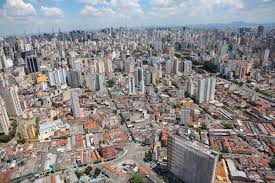

Como começou?
A economia do país está sempre em mudanças e desde o início do Brasil já tinhamos essas mudanças, evoluções e esse comércio

Como funciona?
O comércio das áreas urbanas e rurais são constantes, ou seja, estão sempre ativas e sempre tendo mudanças, ambas das partes se ajudam.
A agricultura e a pecuária são os produtos de comércio das aáreas rurais, já a área urbana tem suas evoluções, tecnologias modos de vidas totalmente adaptáveis.

Necessário?
Totalmente necessário, pois se uma das partes pararem a conômia do país inteiro vai por água abaixo, dependemos dessas vendas e compras para ambas partes se sustentarem/p>
Criado por
Jonathan Henrique da Silva